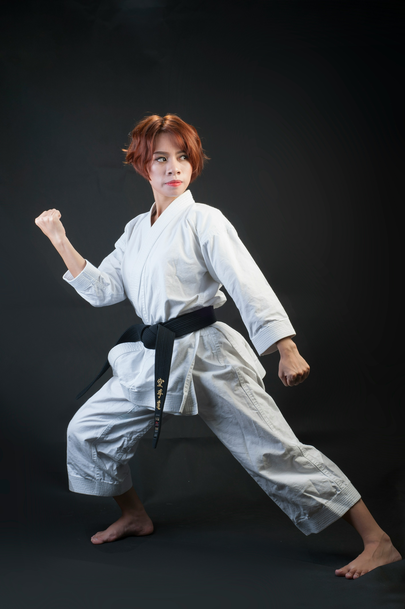
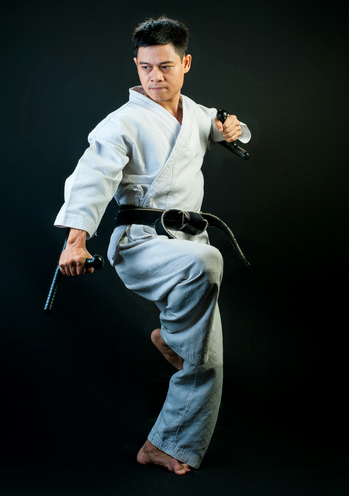

About Us
Founded to uphold the traditional values of Shotokan Karate, Shotokan Warriors was established with the purpose of building strong minds, disciplined bodies and respectful individuals. Inspired by the teachings of Gichin Funakoshi, the Dojo focuses on traditional kata, kihon (basics) and kumite (sparring) while welcoming students of all ages. Over the years, the dojo has grown into a community where dedication, perseverance and the warrior spirit are cultivated both on and oA the mat.
The Dojo was founded in 2015 by Sensei (Grandmaster) Tony Yokozuno, a 5th dan black belt, with over 15 years of training under his belt.
The Shotokan Warriors Dojo is open to any and everyone with ages varying from 4 years to 65 years of age. All races and genders are welcome to enroll in our program.
To teach the traditional art of Shotokan Karate by instilling discipline, respect and perseverance in every student, while building strong bodies, focused minds and confident spirits
To be a leading Dojo that inspires future generations of warriors on the mat and in life

Meet Our Team

Sempai Hashuri
Assistant

Tony Yokozuno
Owner / Grandmaster

Sempai Jackie
Assistant